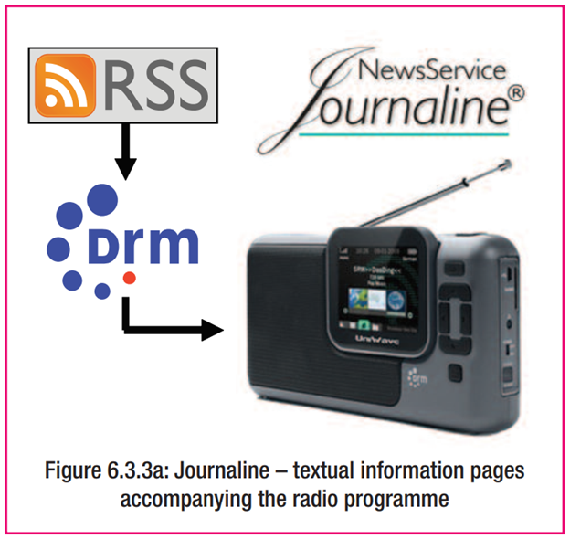

ข้อกำหนดทั่วไปของเครื่องรับ DRM เทคโนโลยีที่เกี่ยวข้อง และประสบการณ์จากการพัฒนาอุปกรณ์รับสัญญาณวิทยุดิจิทัล
7.1 ข้อกำหนดของเครื่องรับ DRM (DRM Receiver Specifications)
เครื่องรับ DRM ต้องสามารถ:
- รับสัญญาณ DRM ได้ทั้งในย่านความถี่ ต่ำกว่า 30 MHz (LF/MF/HF) และ สูงกว่า 30 MHz (VHF/FM)
- ปรับจูนอัตโนมัติด้วยการใช้ข้อมูลในช่อง FAC (Fast Access Channel) และ SDC (Service Description Channel)
- แสดงข้อมูล ชื่อสถานี, โลโก้, ประเภทของรายการ, ภาษา, ประเทศต้นทาง, ฯลฯ
- รองรับบริการเสริม เช่น:
- Journaline (ข้อความโต้ตอบ)
- SlideShow (ภาพนิ่ง)
- SPI (ข้อมูลบริการและรายการ)
- EWF (ระบบแจ้งเตือนภัยฉุกเฉิน)
- รองรับระบบ AFS (Alternative Frequency Switching) เพื่อเปลี่ยนความถี่โดยอัตโนมัติ
เครื่องรับควรมีความสามารถในการเลือกและแสดงรายการตาม:
- ประเภทของรายการ (Genre)
- ภาษา
- ประเทศต้นทาง
7.2 การพัฒนาเครื่องรับ (Receiver Development)
ปัจจัยที่ส่งผลต่อการพัฒนาเครื่องรับ:
- ต้นทุนการผลิต: ราคาที่สามารถแข่งขันได้ในตลาดเป็นสิ่งสำคัญ
- การออกแบบแบบโมดูลาร์: อุปกรณ์บางประเภทใช้ "โมดูล DRM" ที่สามารถติดตั้งภายในอุปกรณ์วิทยุอื่น ๆ ได้
- การพัฒนาซอฟต์แวร์โอเพ่นซอร์ส: เช่น ซอฟต์แวร์ SDR ที่รองรับ DRM
ความร่วมมือ:
- การพัฒนาเครื่องรับ DRM เกิดจากความร่วมมือระหว่างผู้ผลิตฮาร์ดแวร์และผู้พัฒนาซอฟต์แวร์
- DRM Consortium สนับสนุนการทดสอบร่วม (interop testing) และการแบ่งปันความรู้
7.3 วิทยุแบบซอฟต์แวร์ (Software-defined Radios - SDR)
- SDR ใช้ซอฟต์แวร์ในการจัดการกับการถอดรหัสสัญญาณวิทยุทั้งหมด
- รองรับ DRM ได้โดยการใช้ซอฟต์แวร์ที่สามารถประมวลผลสัญญาณดิจิทัล
ข้อดี:
- ความยืดหยุ่นสูง
- อัปเดตได้ง่าย
- ใช้ร่วมกับฮาร์ดแวร์ราคาประหยัด เช่น USB dongle
ตัวอย่างการใช้งาน:
- นักวิจัย
- นักเรียน
- ผู้พัฒนา
- สถานีวิทยุทดลอง
7.4 ส่วนติดต่อผู้ใช้ (Man-Machine Interface - MMI)
การออกแบบอินเทอร์เฟซของเครื่องรับเป็นสิ่งสำคัญต่อประสบการณ์ของผู้ฟัง
ควรใช้งานง่าย เช่น:
- เลือกรายการตามชื่อ ไม่ต้องจำความถี่
- ค้นหาตามประเภทหรือภาษา
- ปรับเปลี่ยนแหล่งที่มาของสัญญาณโดยอัตโนมัติ (เช่น จาก DRM เป็น FM)
การสนับสนุนผู้ใช้:
- เครื่องรับควรแสดงข้อความแนะนำในกรณีเกิดข้อผิดพลาด เช่น "ไม่มีบริการในพื้นที่"
- ควรมีเมนูภาษาในเครื่องเพื่อรองรับผู้ใช้ในแต่ละภูมิภาค
